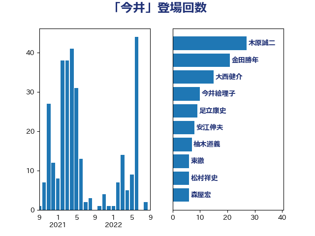

単語「今井」

| 木原誠二 | 自由民主党 | 27 回 |
| 金田勝年 | 自由民主党 | 21 回 |
| 大西健介 | 立憲民主党 | 15 回 |
| 今井絵理子 | 自由民主党 | 10 回 |
| 足立康史 | 日本維新の会 | 9 回 |
| 安江伸夫 | 公明党 | 8 回 |
| 柚木道義 | 立憲民主党 | 7 回 |
| 東徹 | 日本維新の会 | 6 回 |
| 松村祥史 | 自由民主党 | 6 回 |
| 森屋宏 | 自由民主党 | 6 回 |
| 野村哲郎 | 自由民主党 | 6 回 |
| 後藤祐一 | 立憲民主党 | 5 回 |
| 矢倉克夫 | 公明党 | 5 回 |
| 高橋克法 | 自由民主党 | 5 回 |
| 石井浩郎 | 自由民主党 | 4 回 |
| 西銘恒三郎 | 自由民主党 | 4 回 |
| 鶴保庸介 | 自由民主党 | 4 回 |
| 勝部賢志 | 立憲民主党 | 3 回 |
| 平井卓也 | 自由民主党 | 3 回 |
| 杉尾秀哉 | 立憲民主党 | 3 回 |
| 菅義偉 | 自由民主党 | 3 回 |
| 佐藤信秋 | 自由民主党 | 2 回 |
| 加藤勝信 | 自由民主党 | 2 回 |
| 嘉田由紀子 | 無所属 | 2 回 |
| 太田房江 | 自由民主党 | 2 回 |
| 小倉將信 | 自由民主党 | 2 回 |
| 山本香苗 | 公明党 | 2 回 |
| 山東昭子 | 自由民主党 | 2 回 |
| 山添拓 | 日本共産党 | 2 回 |
| 山田宏 | 自由民主党 | 2 回 |
| 松下新平 | 自由民主党 | 2 回 |
| 林芳正 | 自由民主党 | 2 回 |
| 榛葉賀津也 | 国民民主党 | 2 回 |
| 横沢高徳 | 立憲民主党 | 2 回 |
| 細田博之 | 自由民主党 | 2 回 |
| 金村龍那 | 日本維新の会 | 2 回 |
| 青木一彦 | 自由民主党 | 2 回 |
| 高木毅 | 自由民主党 | 2 回 |
| 高良鉄美 | 無所属 | 2 回 |
| 麻生太郎 | 自由民主党 | 2 回 |
| 三ッ林裕巳 | 自由民主党 | 1 回 |
| 中谷一馬 | 立憲民主党 | 1 回 |
| 丸川珠代 | 自由民主党 | 1 回 |
| 古屋範子 | 公明党 | 1 回 |
| 吉田統彦 | 立憲民主党 | 1 回 |
| 大石あきこ | れいわ新選組 | 1 回 |
| 奥野総一郎 | 立憲民主党 | 1 回 |
| 宮本岳志 | 日本共産党 | 1 回 |
| 宮路拓馬 | 自由民主党 | 1 回 |
| 小西洋之 | 立憲民主党 | 1 回 |
| 山下雄平 | 自由民主党 | 1 回 |
| 岡本あき子 | 立憲民主党 | 1 回 |
| 末松信介 | 自由民主党 | 1 回 |
| 本村伸子 | 日本共産党 | 1 回 |
| 松沢成文 | 日本維新の会 | 1 回 |
| 森山浩行 | 立憲民主党 | 1 回 |
| 橋本聖子 | 無所属 | 1 回 |
| 櫻井周 | 立憲民主党 | 1 回 |
| 河野太郎 | 自由民主党 | 1 回 |
| 牧原秀樹 | 自由民主党 | 1 回 |
| 玄葉光一郎 | 立憲民主党 | 1 回 |
| 田村憲久 | 自由民主党 | 1 回 |
| 穀田恵二 | 日本共産党 | 1 回 |
| 自見はなこ | 自由民主党 | 1 回 |
| 芳賀道也 | 国民民主党 | 1 回 |
| 西村康稔 | 自由民主党 | 1 回 |
| 野上浩太郎 | 自由民主党 | 1 回 |
| 野田聖子 | 自由民主党 | 1 回 |
| 阿部知子 | 立憲民主党 | 1 回 |